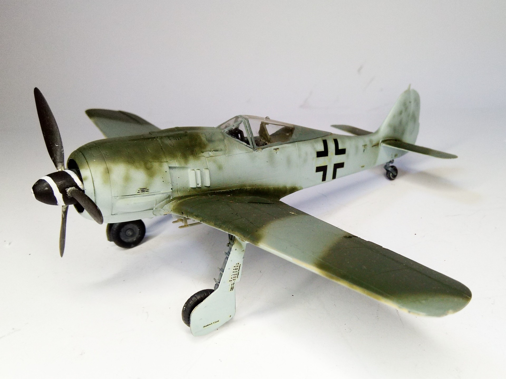
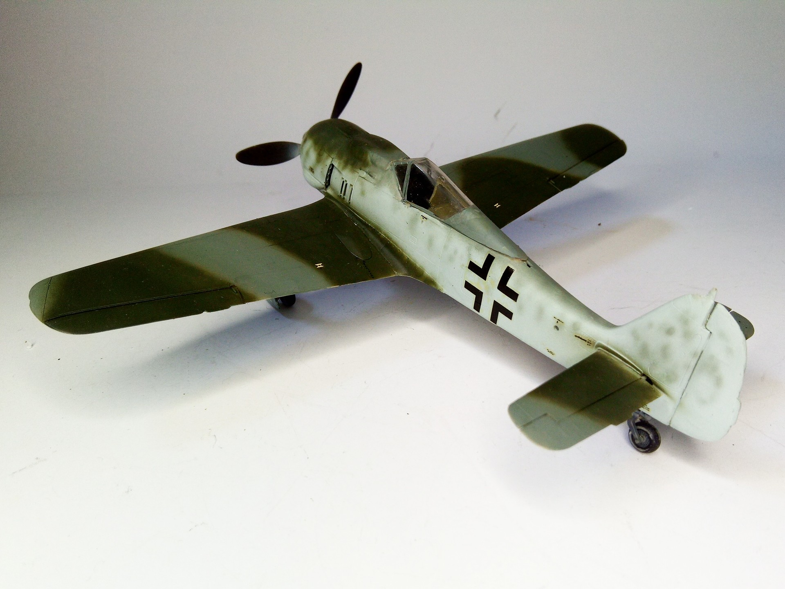

Aerei · scale model archive
Focke Wulf FW190 A8
Focke Wulf FW190 A8 — Kit: Dragon, Scale: 1/48. It was part of the 'Mistel' kit #1/48 #Dragon #FW190A8

Photo gallery

English description
It was part of the 'Mistel' kit
#1/48 #Dragon #FW190A8
Descrizione italiana
Faceva parte del kit “Mistel”.